Matigsalug Manobo Healthbooks
Previous Healthbook Up to main Healthbooks page Next Healthbook
Vernacular Lexicon
A
B
BAP
BL
D
E
G
H
I
K
KI
L
LA
LIP
M
N
O
P
PA
R
S
SE
SIN
T
TE
TIN
U
V
W
Y
Z
Healthbooks
Henduen pad neg pekeuli si Inuk puun te siminar te barangay health worker.

Amana paay-ayari teg guhud te talagpanulu te siminar ke nekey ka keispurtanti teg keen te meupiya neg keenen su eyew layun egmeupiya ka lawa wey keseg, wey egpakabulig te me etew ne keneg pakareralu wey egpekeuli degma teg manderalu.
Amanag kabagget-bagget si Inuk neg pangguhud diyet asawa rin meyitenged te natuenan dan.
Te pegginguma ni Inuk diyet baley ran, nakitan Lolita diyet ulaula te asawa rin ne due igkabagget-bagget din.
Ne mig-inse sikandin ne miggenendue te, “Masulug ka natuenan niyu kuntee?”
Ne migtabak si Inuk te, “Kuntee, nanengnengan kud ke mamenu keispurtanti kag keen te meupiya neg keenen.”
Ne mig-inse si Inuk diyet ki Lolita, “Nakanengneng ka te ka pegkeen te meupiya wey ka peglinis te keuhalingen, ka daruwan paahi neg manekal ki wey egmeupiya ka peglelawa ta?”
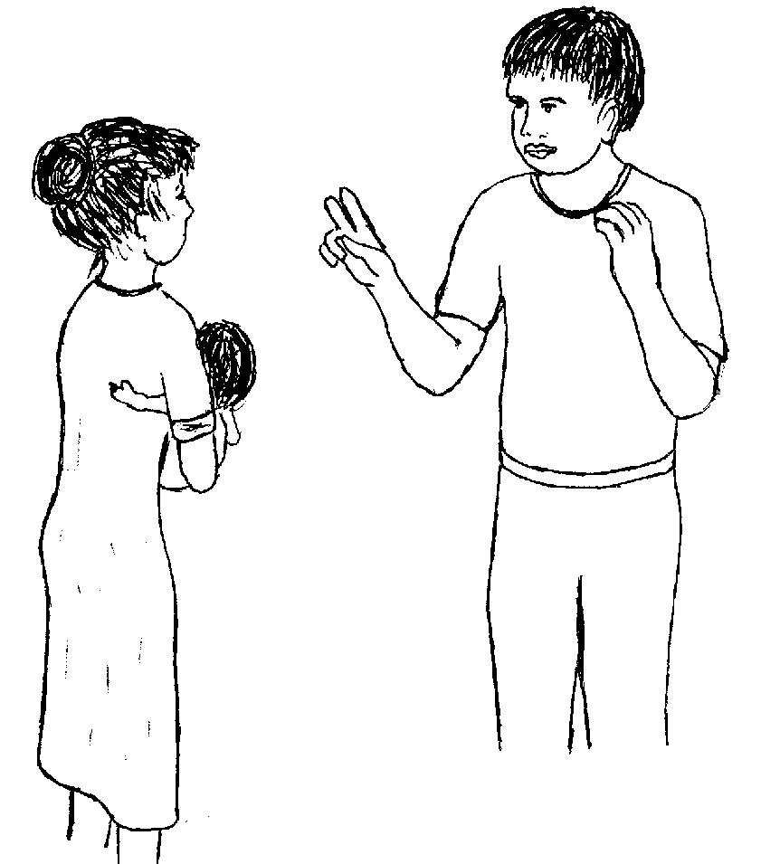
Kahin kandin, “Emun keg tantanuran ta seini, ware perem egpanderalu kayit kantan bariyu.”
Ne migpabulus din ka migkahi te, “Ka kenen malehet neg pangeenen te me etew ka paligkatan teg magguye dan wey mahaan de egpanderalu.
“Wey seini degma ka paligkatan ne kene amanag panulin ka me bate wey mananey egkateu neg gipanew wey mananey egpakasabut keg lalahan.”
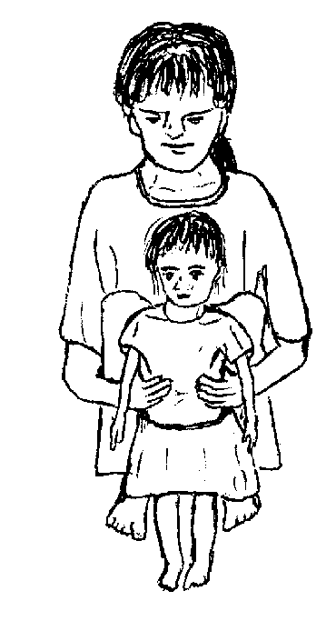
Ne migkahi man-e sikandin te, “Igpapitew ta kandan keg menuwen teg peengked kag keiling due neg keyitabu pinaahi teg keen te malehet neg keenen.”
Ne migkahi si Lolita te, “Nangeni a nikeykew ke nekey neg keenen kag andamen ku su eyew egmannekal ki langun wey egmeupiya ka peglelawa ta.”
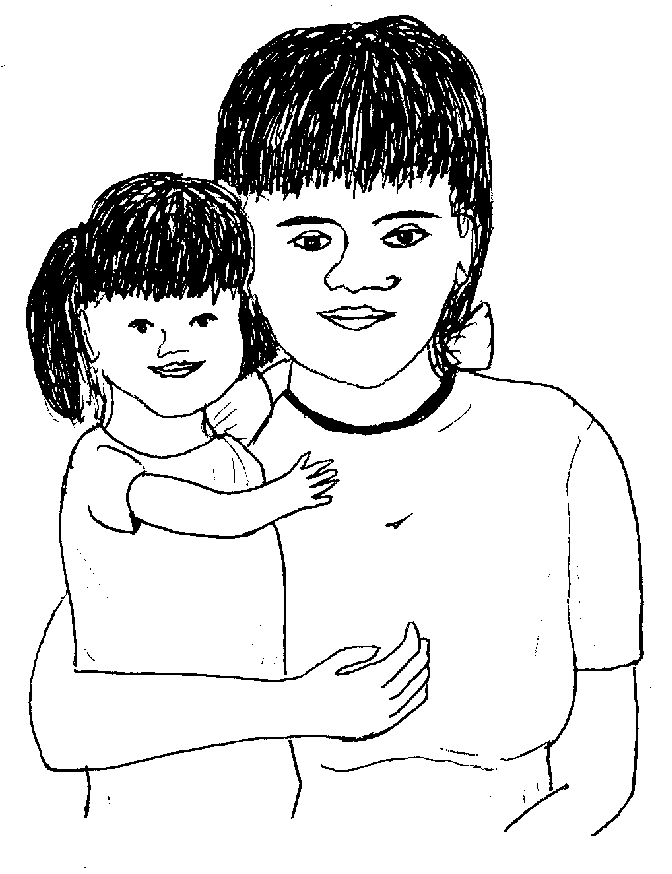
Ne migpangguhud si Inuk ki Lolita te, “Due tatelun kalasi neg keenen.
“Ka pegpatulin neg keenen, ka pegbehey te kanekal, wey ka peg-alang kanta su eyew kene kig deralu.
“Ne emun egkeen ka, keilangan ne kuwa ka langun kayi te tatelun kalasi neg keenen.”
Ne migkahi si Inuk te, “Ka pegpatulin neg keenen iyan sika se karni, isda, manuk, atelug, meni, wey munggus, balatung, suwilas, wey bengag.

“Seinin keenen, ingkeilangan tagse aldew eyew pegpatulin wey pegbehey te keseg labi e te me bate su egtulin pad sikandan.”
Ne migpabulus migkahi si Inuk te, “Ka pegbehey te kanekal neg keenen, sika se hemey, aheley, kasile, suli, teneb, me prutas, wey minsan nekey ne mallambu iling te mentika.
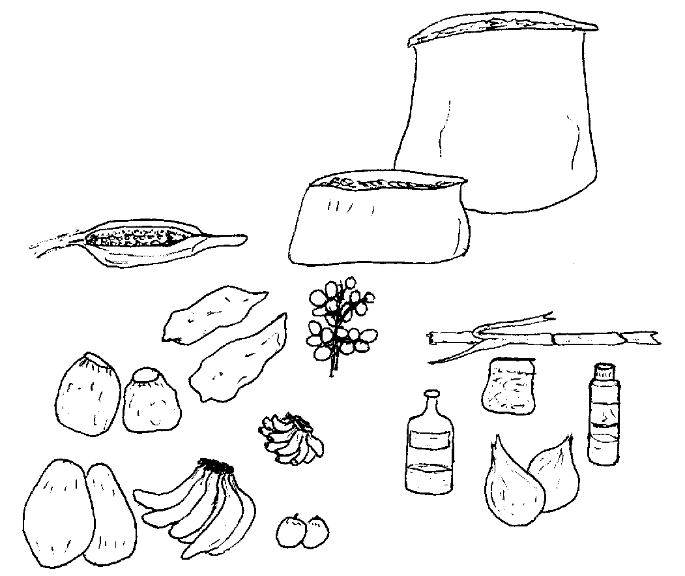
“Egpakabehey sikandan te kanekal kayit lawa ke egtarabahu ki, iling te gas neg pakabehey te siha riyet sulu.
“Piru keilangan degma ne kene ki eg-am-amana egkeen te mallambu wey te meemis neg keenen su kenen meupiya degma para kanta.”
Ne migkahi man-e sikandin te, “Amanan ispurtanti degma ne tagse aldew egpangeen ki te egpakatulin neg keenen wey sika se me prutas wey me gulay.”
Ne migpabulus man-e si Inuk ka migkahi te, “Ka peg-alang neg keenen sika se bitamina wey ka matutansiya neg kakeen. Diyeg kakita sikandan te atelug, karni, manuk, isda, prutas wey me gulay iling te tebesal, alubati, udlut, sayuti, sehutung, timun, wey kalamantis.

“Egpakabulig sika te kantan lawa eyew kene kig mahaan egderalu wey egmakeseg se me tul-an ta wey me ngipen.”
Ne migpaney-paney si Inuk ka migkahi te, “Keilangan ne eg-ayad-ayad ki ne kene ki amanag easin teg keenen ta su sika kag pekeyimu te hayblad wey kenen meupiyan peglelawa.”
Ne mig-abey pad man-e sikandin migkahi te, “Ne keilangan ne dakel ka weyig neg inumen ta tagse aldew.”
Ne mig-inse si Lolita te, “Nekey-a keupiya ka hemey?” Isip din ne iyan amana igkeupii te me etew diyet kandan ne bariyu ka hemey.
Ne migtabak si Inuk ne migkahi te, “Meupiya te natanuran nu ka hemey. Masulug ne me etew ne kenen meupiya ka me lawa ran tenged su kene dan ma egpangeen te duma neg kakeen neg puun te lain ne kalasi neg keenen.
“Nanengnengan ta ne iyan meupiya neg keenen kag binayuwen de ne hemey kuntere te igpahaling su ka egbinayuwen, due ka pegpatulin neg keenen, pamanekal neg keenen wey ka peg-alang neg keenen.
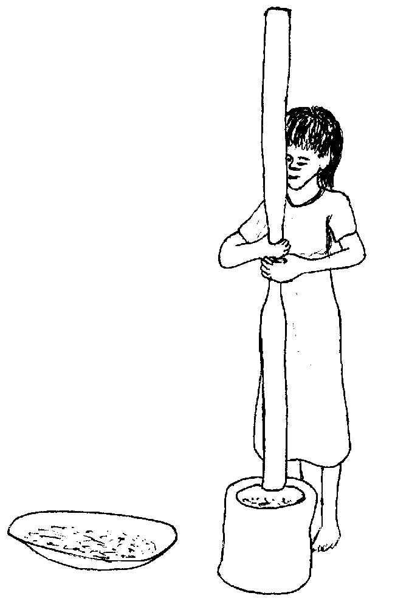
“Ne ka eggalingen ne hemey, masalig e ka nenaawe ne bitamina. Ka pegpamanekal re ne kalasi teg keenen ka nasame piru warad ka duma ne kalasi.
“Meupiya pad ke iyan ta egkeenen kag binayuwen de ne paley kuntere teg galingen e.”
Ne migtabak si Lolita, “Dengan, due paley ta ne ware galinga, piru kuntee, nalayam kid neg keen te eggalingen ne hemey.
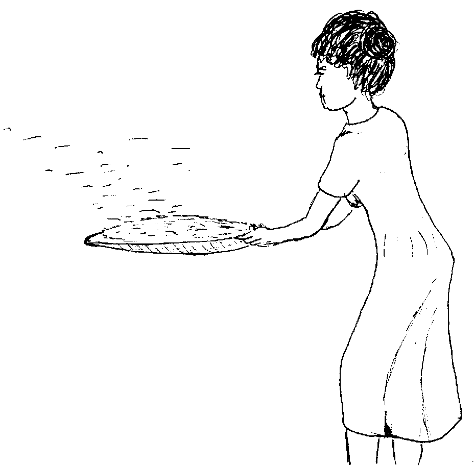
“Su emun bes ke iyan meupiya neg kakeen ka egbinayuwen de, keilangan ne layun e re egbibinayu te paley.”
Ne migkahi si Inuk te, “Kene ki egkahastuwan degma te seleppi ke egbibinayu ki re.”
Ne migkahi si Inuk diyet asawa rin te, “Amanan meupiya kag gimuwen nu neg pasusu te anak ta.

“Kag pasusu te gatas te iney ka amanan meupiya te bate su egpakaalang te me daldaluwen wey egpakapatulin degma kandan.
“Keilangan neg pasusuwen nu seled te sabekan leg-un, wey ke igkeupii nu ne subla pad te sabekan leg-un.”
Ne mig-inse si Lolita, “Nekey ne kalasi kag keenen ne igpakeen ku te anak ta keg tulin e?”
Ne migtabak si Inuk, “Emun ke hep-at e ne bulan ka bate, egkaayun e neg pakeenen te me mewumel iling te sahing, binulalu, wey tinabirak ne kasile piru keilangan neg pabulusan pad teg pasusu. Wey kenen katatelu te re egpakeena ka bate seled te sabekan aldew su keilangan ne me keen-em, piru egtallinteken de. Ne el-elehi nu te egtimul te lain neg kakeen tagse simana.
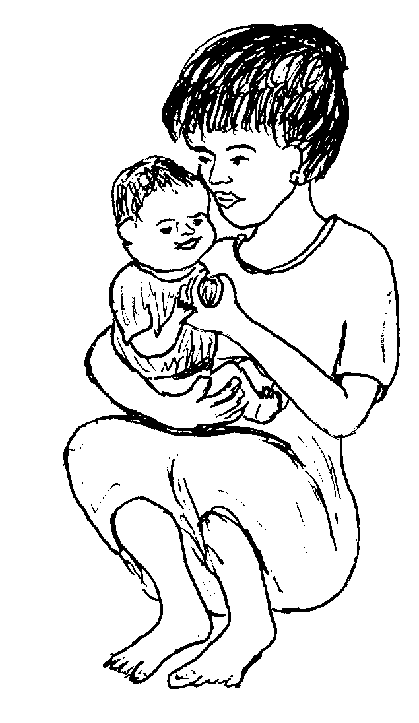
“Ne seup, timuli nud man-e teg pakeen te me makalawag iling te tebesal wey karut wey me meilem ne gulay neg subbeen neg kataman, lupeta nud.”
Ne migpabulus man-e si Inuk ka migkahi te, “Eggutasan sikandin ke kene tag timulan kag kasusu rin te duma neg kakeen ke timpu teg hep-at e ne bulan sikandin.”
Ne migkahi si Lolita te, “Meupiya sika. Ne sika se me bate, keilangan naa ne meupiya ka kandan neg kakeen?”
Ne migtabak si Inuk, “Ka me kakey ne me bate, egpekeg-iling ded kag keenen dan te me buyag e, piru keilangan ne egpangeen sikandan te pegpatulin neg keenen su egtulin men pad sikandan.
“Meupiya perem keg pakakeen sikandan te sabekan atelug te tagse aldew wey me gulay minsan kene dan egkeibeg te me gulay, ke hemey re ka igkeupii ran.”
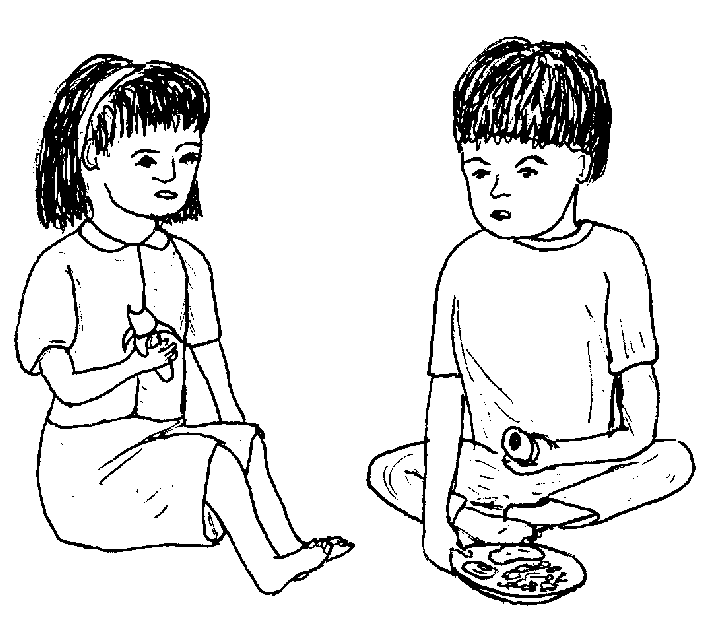
Nakangisi si Lolita ne migkahi te, “Malehen sika su egkeupian dan ma te hemey.”
Ne migkahi si Inuk te, “Piru amanag meupiya ka peglelawa ran emun ke iling due kag pangeenen dan.”
Te pegsulew ni Inuk diyet bintana, iyan din nakita ka me bate ne migpamebeli te me meemis neg kakeen wey me kuk diyet tindaan.
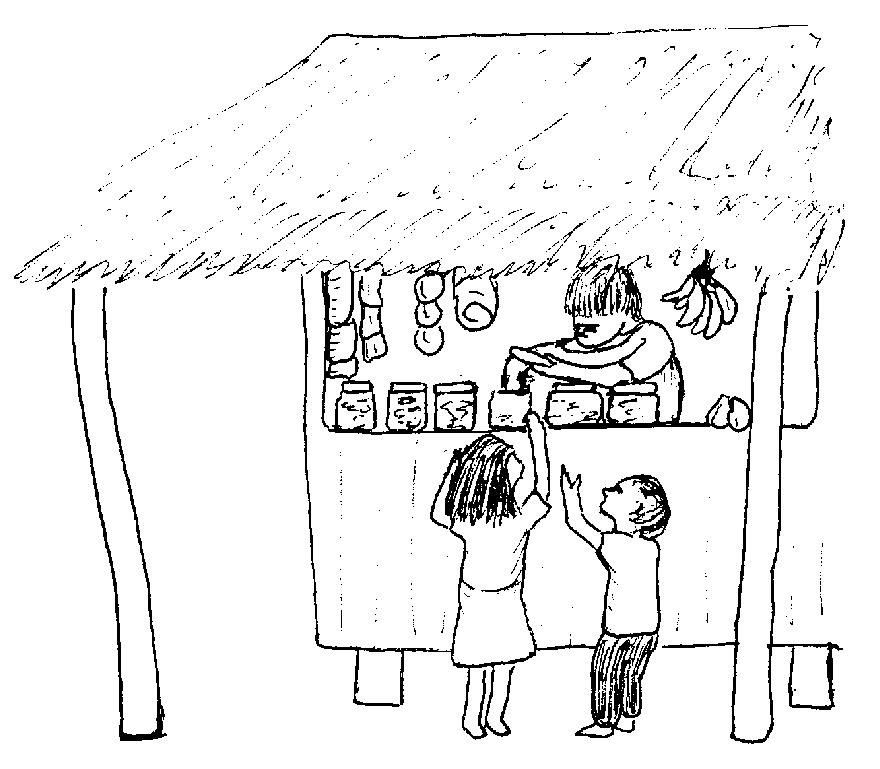
Ingkahiyan din ka asawa rin te, “Sulawa nu ka me bate. Iling due neg gimuwen te me bate, keilangan neg tantanuran ta su sika se me meemis neg keenen wey ka me kuk, amanan dakel ka sukal due.
“Su ka sukal, egpakarereet te me ngipen te me bate wey keneg keupian neg pangeen te malehet neg keenen.
“Para te keupianan te lawa te me bate, keilangan ne iyan egbeliyen ka meupiya neg kakeen.”
Ne migtabak si Lolita ka migkahi te, “Uya iya su masalig amanan me bate ka egpamebeli te me meemis neg kakeen seeye te tindaan.”

Ne migkahi man-e si Lolita te, “Puun te amana rakel kag gimuwen ku, egpamehayan ku re due ka me bate neg buyu te seleppi su neubil ad kandan.”
Ne migkahi si Inuk te, “Ayad-ayad ka ne kene ka egpekeyimu te iling due.
“Egpanuluen ku pad sikandan ke mania te keneg kaayun neg bebeli sikandan te iling due.”
Ne mig-inse si Lolita, “Sika se egkaberes ne malitan, keilangan naa sikandan te meupiya degma neg keenen?”
Ne migkahi si Inuk te, “Ka egkaberes ne malitan, keilangan ne amanag ayad-ayad neg keen teg keenen puun te tatelu ne kalasin keenen.
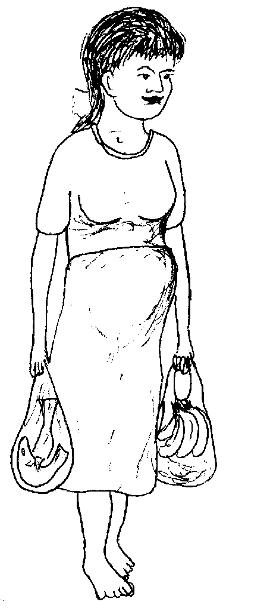
“Keilangan ne egpangeen sikandan te pegpatulin neg keenen iling te atelug, isda, karni, gulay wey me prutas, su daruwa ran man-e teg keen.”
Ne puun dutu, migpammule e man-e si Lolita te me gulay wey iyan din egsubbeen ne hemey ka egbinayuwen de.
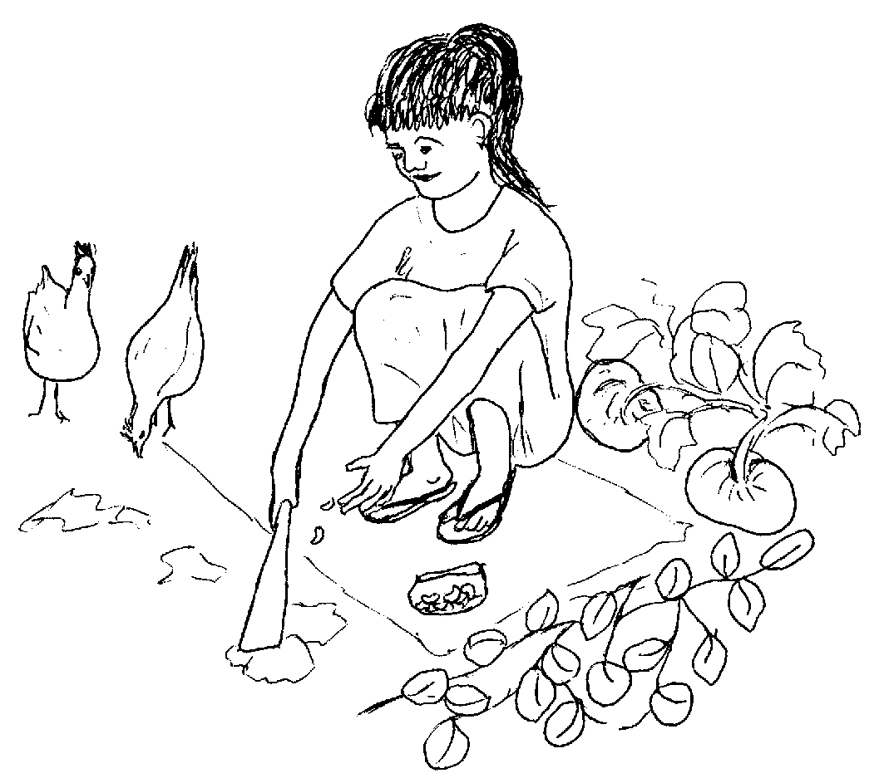
Ne mig-eayam si Inuk te me manuk su eyew due atelug neg kakeen dan.
Ne due timpu neg gilang sikandan te manuk su egpakabehey degma te keupianan ka karni te manuk diyet lawa ran.
Seup ne simana, migpanumbalayan si Inuk te etew. Migpangguhud sikandin teg mahuye kun de due sikandin wey egkabeley re due, ne mig-inse sikandin ke egkaayun naa neg beli rin te bitamina ne tablitas.
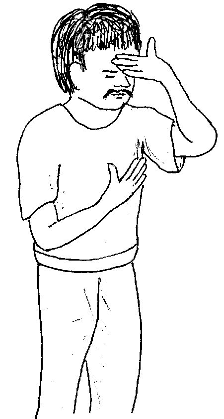
Mig-insaan ni Inuk ka etew ke nekey ne keenen kag pangeenen din.
Ne migtabak ka etew te, “Ka eggalingen ne hemey wey ka me kasile. Ne sengekakuwan gulay wey ke isda naa.”
Ne migkahi pad man-e ka etew te, “Malehed a man-e neg inum te kuk su egkammaraan e ma labi e keg tarabahu a ne amanan meinit ka aldew.”
Ne migtabak si Inuk ne migkahi te, “Ware amana bitamina nu wey sustansiya ne nakuwa teg pangeenen nu, ne seini kag puunan ke mania teg keiling ka rue kuntee.
“Piru mahal neg beliyen kuntee ka bitamina ne tablitas, meupiya pad ke iyan nu egbeliyen ka gulay, atelug, wey deisek ne karni. Su sika neg keenen, dakel ne bitamina ka egkaangey nu ne ingkeilangan te lawa nu wey kene degma amanan mahal neg beliyen.”
Ne migkahi man-e si Inuk te, “Emun keg pammula ka te me gulay wey eg-eayam ka te me manuk, kene ka amanag kahastuwan.”
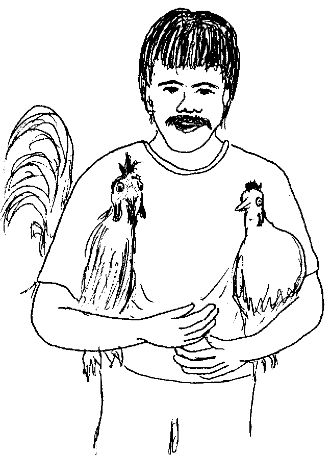
Ne kahi ni Inuk, “Keilangan neg engked kad ka layun eg-inum te kuk su meupiya pad ke iyan nu re eg-inumen ka weyig keg kammaraan ka. Ne puun due, egmeupiya ka lawa nu wey kene ka egkahastuwan te seleppi. Ne ke due seleppi nu, iyan nu pameliya ka egkeenen neg pakabehey te keupiyanan te me lawa niyu te taltalaanak.”
Nekey-a ka egkeyitabu kayi te kanta ke egkeen ki te kenen meupiya neg keenen?
Nekey-a ka tatelu ne kalasi te pegkeen, wey mania te amanan ispurtanti te kanta ne lawa?
Mania te iyan meupiya neg keenen ka egbinayuwen kuntere te eggalingen ne hemey?
Nekey-a ka ispurtanti ne igpakeen te bate wey mania te ispurtanti kandan?
Mania te keneg kaayun neg pangeen ki te amanan dakel ka asin, malambu wey ka me meemis?
Meupiya naa ka eg-inum te bitamina ne tablitas? Mania?
Egmahuye ki wey mahaan ki egderalu. Ne ka me bate, kene amanag tulin wey kenen meupiya ka peglelawa. (Lukib 9)
(a) Pegpatulin neg keenen: para te pegpatulin wey kanekal. (Lukib 13)
(b) Pamanekal neg keenen: egbehey te kanekal teg gimu. (Lukib 15)
(c) Ka peg-alang neg keenen: peg-alang te lawa ta eyew kene kig mahaan egpanderalu, wey eyew egmemakeseg ka me tul-an ta wey me ngipen. (Lukib 17)
Ka egbinayuwen ne hemey, duen pad ka tatelu ne kalasi neg keenen. Piru ka eggalingen ne hemey, kenad ne kumpulitu su nenaawe e ka duman bitamina te pegpahaling. (Lukib 19)
Ka gatas te iney su duen e langun ka ingkeilangan te bate eyew egtulin wey eyew keneg dedderalu. (Lukib 23)
(a) Ka rakel ne asin, sika ka egpakahayblad ne sika ka egpakarereet te lawa ta. (Lukib 17)
(b) Egpakarereet degma te lawa ta ka malambu. (Lukib 15)
(c) Egpakarereet te me ngipen ka me meemis. (Lukib 29)
Meupiya pad ke iyan ta egbeliyen ka me gulay, atelug, wey ke due karni su kumpulitu e te bitamina ne ingkeilangan kayi te lawa ta. Ne iyan man-e meupiya ke egmammula ki te gulay su eyew kene kid egbebeli, wey eg-eayam te me manuk su eyew egpakakeen ki te me atelug wey karni. (Lukib 39)
This page last updated: 03-Jan-2020
Copyright © 2009-2010